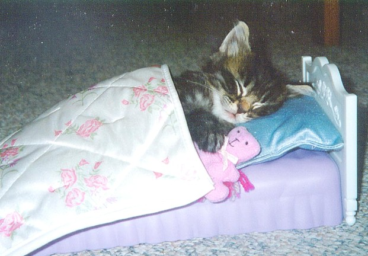
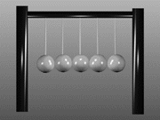

9:00
9:05-
10:00
11:05
2110
2110
2110
12:10
2010
2010
2010
12:20-1:15
2:30-5:30
or
3:00-5:50
 Phys
Phys3820
Phys3820
Phys3820
6:00 - 7:15

(Acoustics)

| Period | M | T | W | Th | F |
|---|---|---|---|---|---|
| 8:00- 9:00 |
 | ||||
9:05- |
|||||
| 10:10- 11:05 |
Phys 2110 |
Phys 2110 |
Phys 2110 |
||
| 11:15- 12:10 |
Phys 2010 |
Phys 2010 |
Phys 2010 |
||
12:20-1:15 |
|
||||
| 1:25-2:20 | |||||
2:30-5:30 |
Phys 3820 |
Phys 3820 |
Phys 2010-Lab | Phys 3820 |
|
6:00 - 7:15 |
Dinner |
Dinner |
Phys 1100 (Acoustics) |
Dinner |
|
| 7pm-9pm | Mastersingers |
|
|
Happy Hour |
Information available on:
Other courses I've taught:
Astr 1010 || Astr 1020 || Phys 1100 || Phys 1310 || Phys 2010 || Phys 2020 || Phys 2110 || Phys 2112 || Phys 2120 || Phys 2920 ||
Phys 3120 |||| Phys 3610 || Phys 3810 || Phys 3820 ||Phys 4610 || Phys 4620 || Phys 4900 ||
You can now peruse my Phys 2110 and 2120 Example Books Online!!! Students in Phys 2010 and 2020 may also want to take a look at these.
 Pre-Physics Study Guide
A refresher / tutorial on calculators, algebra and trig!
Pre-Physics Study Guide
A refresher / tutorial on calculators, algebra and trig!
Problem-Solving Videos Very preliminary. My response to the Khan academy. KHAN!!!!!
I keep an "open-door" policy for students, meaning that if a student wants help in a course I will drop what I'm doing if at all possible and provide it. This offer is open to students in physics courses taught by other faculty members and, if time permits, for students in any science/math course. Sometimes my office door is literally closed; if so, it is due to my problem with migraine headaches or if I'm just plain old dog-tired; just knock! The open-door policy still applies! (?)
 I usually keep late hours. I prefer to work here at night rather
than in the daytime, when the students are sometimes making noise in the hall. But I will still provide
help at late hours; my day doesn't stop at 5pm.
I usually keep late hours. I prefer to work here at night rather
than in the daytime, when the students are sometimes making noise in the hall. But I will still provide
help at late hours; my day doesn't stop at 5pm.
Click here to hear how I begin every lecture.
{kind=link}